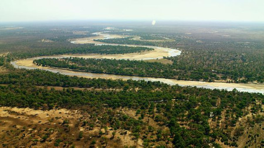
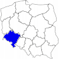

Stany na dzień 2022-05-05
| Wodomierz | Rzeka | Ostrzegawczy | Alarmowy | Aktualny |
|---|---|---|---|---|
Informacje
- Brak ostrzeżeń o burzach z gradem
- Smog w mieście Wrocław
- Silny wiatr w Karkonoszach
Średne stany wód
Dowiedz się więcej

| Wodomierz | Rzeka | Ostrzegawczy | Alarmowy | Aktualny |
|---|---|---|---|---|
